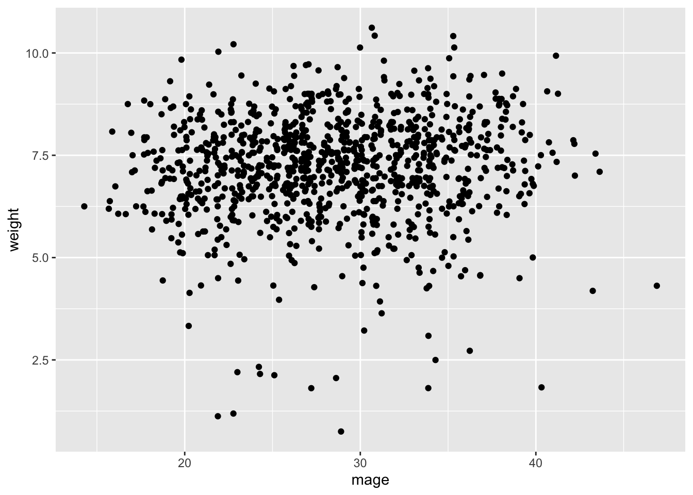
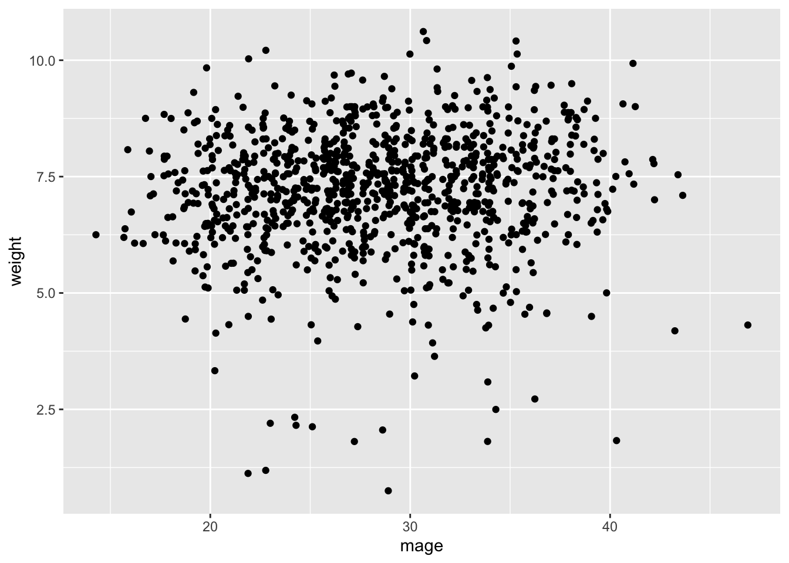

Code
ggplot(data=births14, aes(x=mage, y=weight)) + geom_jitter()
In this lab, we will perform statistical inference for linear regression. We will start by examining a numerical predictor variable then proceed to a categorical predictor variable with two levels (equivalent to a t-test used to test difference in means). Note that in both cases, the response variable is numerical.
To create your quarto file, follow the following steps:
Go to File>New File > Quarto document. In the title field use Inference for a Single Mean then write your name under the Author field. Change the output option to PDF.
Next, save the document as Lab_07. If you did it correctly, the file Lab_07.qmd should appear under the files section with a .qmd extension.
You will need the following packages: openintro, tidyverse, infer, and tidymodels. The package tidymodels is new so you will need to install it before you proceed. Once you have installed it, load the packages using the command below:
library(openintro)
library(tidyverse)
library(infer)
library(tidymodels)Prior studies have hinted at links between mothers’ age and child birth weight, as well as potential health consequences when babies are very small or very large. Babies who grow less than expected in the womb have a higher risk of birth complications, as well as diabetes and heart disease in adulthood. Very large newborns may be more likely to become obese later in life. For more details, see https://obgyn.onlinelibrary.wiley.com/doi/10.1111/j.1471-0528.2010.02823.x.
We want to answer the following research question:
Is there a relationship between mother’s age and baby’s birth weight?
To answer the above research question, we will use a data set called births14 contained in the openintro package. Load this data using the command below then examine it to understand its variables (including units) and cases:
data(births14)The null and alternative hypotheses are as follows:
Null Hypothesis: There is no linear relationship between mothers’ age and birth weight.
In symbols: \(H_0:β=0.\)
Alternative: There is a linear relationship between mothers’ age and birth weight.
In symbols: \(H_A:β\neq 0.\)
Let us start by creating a scatter plot to visualize the relationship between mothers’ age and baby birth weight (weight). Use the code below:
ggplot(data=births14, aes(x=mage, y=weight)) + geom_jitter()
Describe the relationship between age and weight. What does the scatter plot suggest? Would you say there is a linear relationship?
First, we want to find the observed statistic. Note that for this scenario, the statistic is the slope of the linear model predicting baby weight based on mother’s age.
obs_stat<- lm(weight~mage, data=births14)
tidy(obs_stat)# A tibble: 2 × 5
term estimate std.error statistic p.value
<chr> <dbl> <dbl> <dbl> <dbl>
1 (Intercept) 6.79 0.208 32.7 1.15e-159
2 mage 0.0142 0.00717 1.99 4.72e- 2Here, the observed statistic (slope of the model) is 0.0142428. This means that on average, birth weight increases by 0.0142428 lbs for every additional year in mother’s age.
The one slope obtained from the data above may have happened due to the natural variability inherent in data. The next step is to run several a simulation to generate several statistics assuming that the null hypothesis is true (null distribution). We will then compare our observed statistic with the null distribution. We will store this as simulated_slopes. Use code below:
set.seed(123)
simulated_slopes<- births14%>%
specify(response = weight, explanatory = mage )%>%
hypothesise(null="independence")%>%
generate(reps=1000, type="permute")%>%
calculate(stat="slope")Click on the new object simulated_slopes. You should see a data frame with 1,000 rows and 2 columns. The first column is the replicate and the second is the slope (written in scientific notation). You may convert the slope to ordinary form by mutating the format as shown below. Note that we are changing the name to simulated_slopes_2.
We want to create a histogram to visualize the distribution of the statistics (slopes) created above. We also include a vertical red line to show the location of our observed statistic.
visualize(simulated_slopes) +
geom_vline(xintercept = 0.0142428, color="red") +
labs(title="Null Distribution of Slope",
x="Slope",
y="Count") +
shade_p_value(obs_stat = 0.0142428, direction = "both")As expected, the histogram is centered about 0 because the null hypothesis assumes no relationship (i.e., zero slope) between the variables. The observed statistic is to the right and the P-value will be the percent of data in the shaded region (two-sided test).
In order to make a conclusion about the hypothesis test, we need to obtain the P-value. The P-value is the probability of getting a slope of 0.0142428 by chance alone assuming that the null hypothesis is true. The function for getting the P-value is get-p-value(). See below:
simulated_slopes%>%
get_p_value(obs_stat = 0.0142428, direction="both")# A tibble: 1 × 1
p_value
<dbl>
1 0.072The P-value means that there is a 7.2% chance of observing a slope as large as 0.0142428 by chance alone assuming the null hypothesis is true. Since this value is fairly large, we say that the data does not produce sufficient evidence to reject the null hypothesis. Thus, we can conclude that there is likely no relationship between mother’s age and birth weight. We often use a cut off of 5% to make this conclusion.
We now want to create a bootstrap confidence interval to estimate the range within which expect to find the true population slope for the model predicting babies’ birth weight based on mothers’ age. To do this, we first create 1000 bootstrap samples using the code below. Take not of the difference between the code below and the one used earlier to generate the 1000 slopes for hypothesis test.
bootstrap_samples <- births14 %>%
specify (weight ~ mage) %>%
generate (reps = 1000, type = "bootstrap") %>%
calculate (stat = "slope")Once you run the above code, the object bootstrap_samples will appear in the environment area. Click to view it. If we create a histogram to visualize the distribution of these values, what would you expect the histogram to look like?
We want to create a histogram to visualize the bootstrap distribution. We will also indicate the location of the observed statistic using a vertical red line.
visualize(bootstrap_samples)+
geom_vline(xintercept = 0.0142428, color="red")Question: How different is the bootstrap distribution from the null distribution? Why the difference?
Our next step is to find the lower and the upper boundaries of our 95% confidence interval. We use the function get_ci() from the infer package. See code below:
bootstrap_samples %>% get_ci(type = "percentile")# A tibble: 1 × 2
lower_ci upper_ci
<dbl> <dbl>
1 0.0000925 0.0292#By default, get-ci returns the 95% CI unless you specify otherwise.The lower limit is the 2.5th percentile (0.0000925) and the upper limit is the 97.5th percentile (0.0292). This means that we are 95% confident that the true population slope lies between these two values. Note that the interval does not include 0. This means that the interval and the hypothesis test do not agree but are very close. Zero is barely outside the interval.
In the example above, our predictor variable (age) and the response variable (weight) were numerical. If the predictor variable was categorical (2 levels), the test would be equivalent to testing the difference in means between the levels of the predictor variable. This test is popularly known as independent t-test. Let us make this more concrete:
Suppose we want to answer the following research question: Do smoking mothers give birth to lighter babies than non-smoking mothers?
We could state the hypotheses as follows: Null Hypothesis: There is no difference in weight between babies born to smoking mothers and those born to non smoking mothers.
\(H_0:\mu_1=\mu_2\) where, \(\mu_1\)= average weight of babies born to non-smoking mothers and \(\mu_2\)= average weight of babies born to smoking mothers.
Alternative Hypothesis: Babies born to smoking mothers weight more on average than those born to non-smoking mothers.
\(H_A:\mu_1>\mu_2\) .
The observed statistic is the difference in mean weight between babies born to smoking mothers and those born to non-smoking mothers in the data. Observe that the smoking status of a mother is stored as habit in the data set. To see the means side-by-side we can run the code below. Notice that we drop na values (empty cells) before grouping and summarizing.
births14 %>%
drop_na(habit, weight)%>%
group_by(habit) %>%
summarize(mean(weight))# A tibble: 2 × 2
habit `mean(weight)`
<chr> <dbl>
1 nonsmoker 7.27
2 smoker 6.68Thus, our observed statistic would be 0.59268.
We can now run repeated simulations to obtain more statistics to give us a null distribution. Take a moment to examine the code line by line. Most parts of the code should be familiar by now.
We can visualize the distribution and also include the observed statistic as before:
visualize(simulated_data_2) +
shade_p_value(obs_stat = 0.59268, direction ="two-sided")Based on the above histogram, what do you expect the P-value to be?
Run the code below to get the P-value then write the conclusion in context.
simulated_data_2 %>%
get_p_value (obs_stat = 0.59268, direction = "greater")# A tibble: 1 × 1
p_value
<dbl>
1 0Create a new quarto file to complete the exercises below. Save the file as Lab_07_exercises.qmd in your Labs folder.
(2 pts) The data set yrbss is contained in the openintro package. Load the data set into your work space and describe it briefly (be sure to state the number of variables and cases in the data set).
(3 pts) Create a scatter plot for height and weight. How would you describe the relationship between these variables based on the scatter plot? Be sure to talk about strength, and direction of the relationship.
(2 pts) Find the correlation coefficient between the two variables in number 2 above. Does it agree with your description of the scatter plot?
(3 pts) Create a linear regression model predicting weight based on height. What is the slope of the model? What does it mean in context?
(10 pts) Run a simulation-based hypothesis test to determine if there is a relationship between height and weight. Be sure to include the null and alternative hypotheses, the observed statistic, the null distribution, the P-value, and your conclusion in context.